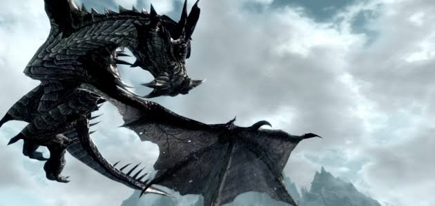

Dragões
Inimigos centrais da história, encontrados pelo mapa e em ninhos nas montanhas. Dragões comuns e de sangue cospem fogo ou gelo; os anciões e lendários têm muita vida e usam Gritos devastadores. Alduin é o antagonista principal, o Devorador de Mundos.